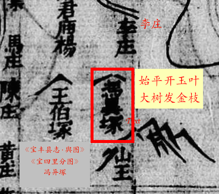

明朝隐塘的缘起
隐塘始祖
明景泰1454年，八世祖冯元佑在万泉河口博鳌当汛守，遂家於此，生四男。长子文贤肇基汀洲，次子文昌肇基培兰村，三子文盛迁居沙美村，四子文成留在隐塘。

隐塘村
隐塘村坐落在万泉河口，美如增江作的一首七言。

宋朝冯细歌
二世祖冯细歌在宋朝时从福建莆田迁居海南琼山。
隋朝福建祖
福建祖在隋开皇(584年)时从莆田分四支:
- 1支，明朝时北迁到江苏、山东
- 2支，留在福建
- 3支，唐贞观十八年(644年)时分两支，开始南迁到潮州、海南
- 4支，明朝时北迁到辽宁
东汉大树将军
- 冯异(?-34年)，字公孙
- 颍川父城人《后汉书·卷十七 冯岑贾列传 第七 冯异列传》
- 冯异冢在宝丰县故里的东南方
- 清道光《宝丰县志•舆图》十里分图中的《宝四里分图》有"冯异冢"标志

- 清道光《宝丰县志•舆图》十里分图中的《宝四里分图》有"冯异冢"标志
- 后代冯氏宗祠的楹联写：
- “始平世泽；大树家声”
- “始平开玉叶；大树发金枝”
春秋战国河南荥阳冯城
冯氏最初发祥于河南省荥阳(XíngYáng)，以下有几种说法：
- 毕万奉禄食采地于冯城
- 姬姓，毕氏，周文王庶子毕公高的后裔，春秋时期晋国的大夫(晋献公，？~前651年)
- 冯城一说是陕西省大荔县的冯翊城，一说是河南省荥阳县西
- 出自归姓，前544年春秋中后期周景王时，郑国名卿冯简子封地冯邑
- 据《世本》记载，入居冯邑后，遂号冯简子
- 他的封地冯邑，正是后来并入魏国的冯城
- 约前445年春秋战国时期
- 魏国国君魏文侯名斯，也是毕万的后代
- 魏斯之子魏启字长卿，封于冯 (今河南省荥阳县西)
- 前403年周威烈王再封毕万的支孙冯文孙于冯城
周朝始平郡
冯氏的先祖从姬姓开始。周文王(西伯侯，姬昌，约前1152年 ~ 前1056年)第十五子(庶子)毕公高封地在毕，故子孫以毕为姓。 西周时，毕公高后裔毕万在晋为大夫，当时晋献公将其地分封给有功之臣，毕万被封于魏(今山西芮城县附近)。
- Quote from Wikipedia
- 晋献公去世后，四子争立为国君，引发内乱。毕万生芒季，芒季子魏武子(名犨)跟随公子重耳流亡十九年，是五贤之一，返国后继承魏氏。
冯姓产生的过程看来好像是姬 → 毕 → 魏 → 冯。
始平考证
- Quote from Wikipedia
- 始平郡，中国西晋(266~316年)时设置的郡。治所在槐里县 (今陕西省兴平市东南5公里南佐村)。
祖先迁徙路径
- 新加坡冯氏祖先迁徙图 (OpenStreetMap版) (高德地图版)
- 尝试用地图的方式来讲述新加坡冯氏祖先的故事。欢迎大家的参与，一起讲好祖先的故事。您的回馈与校对将有助于完善此任务，谢谢。
- 地图更新历史
- 2025年3月8日版地图，细化菁蔴山大树村冯氏迁徙路径
- 2025年3月10日版地图，添加上党冯氏